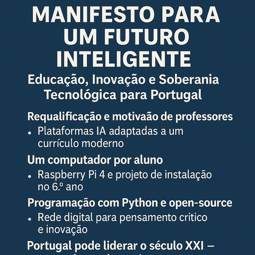

🇵🇹 Manifesto para um Futuro Inteligente pela Educação
Publicado em 2025-06-15 08:16:06

Educação, Inovação e Soberania Tecnológica para Portugal
Por Francisco Gonçalves
Portugal é um país pobre em recursos naturais, mas rico em talento adormecido, juventude subaproveitada e professores abandonados.
Nos últimos 100 anos, reformámos tudo — menos o que realmente importa: a educação como motor de soberania, desenvolvimento e inovação.
Hoje, apresento não um sonho, mas um plano sólido e possível para preparar Portugal para liderar — sim, liderar — o século XXI.
🎓 1. Requalificação e reinvenção dos professores
Nenhuma revolução educativa é possível sem colocar o professor no centro — não como transmissor de manuais, mas como mentor, guia e catalisador de pensamento.
- Formação continuada real, com acesso a conhecimento de ponta, metodologias modernas e ferramentas digitais.
- Mobilização e motivação do corpo docente através de reconhecimento profissional e envolvimento no currículo.
- Redução da carga mecânica, com apoio de IA e automação de processos repetitivos.
🤖 2. Inteligência Artificial como aliada da aprendizagem
- Introdução de plataformas adaptativas baseadas em IA, personalizadas para cada aluno.
- Assistência inteligente nas áreas-chave:
Filosofia (raciocínio),
Psicologia (autoconhecimento),
Matemática (lógica),
Português (expressão e identidade).
- A IA não substitui o professor — liberta-o para orientar, acompanhar e inspirar.
🧑💻 3. Projeto "Um computador por aluno" — acessível e transformador
A partir do 6.º ano:
- Cada aluno recebe um Raspberry Pi 4 (ou equivalente open-source de baixo custo).
- Instalação, configuração e exploração fazem parte do processo educativo.
- Todas as escolas com infraestrutura básica garantida: monitores, internet, espaços de trabalho partilhado.
🐍 4. Introdução à programação e cultura open-source
- Ensino obrigatório de Python, como base para o pensamento computacional.
- Introdução a sistemas abertos, software livre e ética digital.
- Criação de clubes de programação, robótica, investigação e jornalismo digital — com tutores tecnológicos.
🔁 5. A escola como laboratório de futuro
- Os professores tornam-se tutores do conhecimento, não repetidores.
- Os alunos tornam-se criadores, exploradores, investigadores.
- As disciplinas convergem: tecnologia, cidadania, arte e ciência caminham juntas.
🌍 6. Resultados esperados em 15 a 25 anos
- Uma geração com pensamento crítico, autónomo e criador.
- Um país menos dependente de software proprietário, com economias de milhões.
- Uma nova elite intelectual, mais ética, mais livre, mais visionária.
- Um Estado menos burocrático e mais competente, com base digital.
- Uma economia vibrante, baseada no conhecimento, inovação e soberania tecnológica.
✊ Conclusão: Educação é liberdade — e Portugal precisa de libertar-se
Um país que investe a sério na educação não é apenas mais rico.
É mais livre.
Mais justo.
Mais preparado para os choques do futuro.
Este plano não é utopia. É estratégia lúcida de quem já percebeu que o tempo da mediocridade acabou.
📍Publicado em Fragmentos do Caos
✍️ Por Francisco Gonçalves
Com apoio editorial de Augustus Veritas
“Portugal não precisa de mais reformas cosméticas — precisa de um plano sério para preparar o futuro.
Educação com IA, professores motivados, programação e tecnologia acessível.
Um Raspberry Pi por aluno hoje… uma geração líder do século XXI amanhã.”
— Francisco Gonçalves
Pode consultar aqui uma apresentação sobre este Manifesto para a Educação no século XXI :